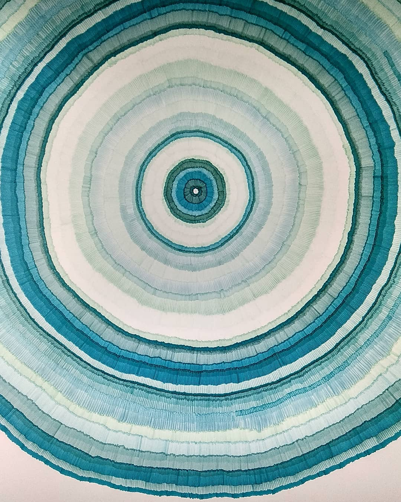

KORIV KRUTI ARCHITECTS
Koriv Kruti Architects is an award winning Architectural firm known for an experiential architecture that hinges on simplicity and connection with the natural environment. The firm work has been recognized for contextual sensitivity, experimental material use and a minimalism reflective of the Sri Lankan ethos. The decade old practice remains intentionally small and personalized. The design and working process is always deeply connected to site. The firm has worked on a varied range of projects across the world, projects which are often small in scale, the firm with its personalized approach, imbues each project with a sense of connectedness to the context, region, climate and landscape using locally available materials and technology to provide a rich spatial experience.